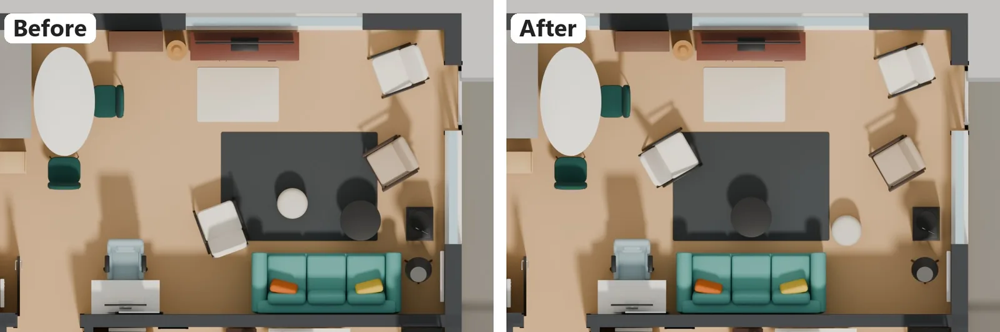

I turned 13 photos of my flat into a 3D planner with AI
A floor plan, 13 phone photos and one prompt. Now I can move my furniture around in 3D before lifting a single thing.

On this page4 sections
I wanted to try a few furniture layouts without actually dragging the sofa around the flat. So I gave my AI a floor plan and 13 photos from my phone, and asked it to rebuild the whole place in 3D.
It basically got it right in one go. Now I have a 3D version of my flat where I can drag any piece of furniture around, and it tells me when something hits a wall or another piece.
A lot of you asked how I did it, so here’s the prompt. You can paste it straight into Claude, ChatGPT, Codex, Antigravity or whatever you use.
Give this to your agent
Copy a prompt and paste it into Claude, ChatGPT, Codex or any coding agent. Swap the highlighted [BRACKETS] for your own details first.
Fill in the bits in brackets, send it, and then send your photos (and a floor plan if you have one).
I'm going to send you photos of my [FLAT / HOUSE / ROOM], and a floor plan if I have one. Turn them into an interactive 3D model of my home that I can open in my browser.
Build it as a single HTML page (three.js is fine) and show it to me as a preview if you can.
What I want:
- Walls, doors and windows in the right places
- All my furniture from the photos, roughly the right size and in the right place
- I can drag any furniture around and rotate it, with a mouse or my finger
- Furniture turns red if it hits a wall or another piece
- A top-down view and a 3D view
- Leave out clutter like [CLOTHES, BAGS, PLATES], but keep all the furniture
For the size: [ONE REAL MEASUREMENT, e.g. living room is 4.2 m wide]. If I don't have one, estimate from the photos.
If there's no floor plan, work out the layout from the photos. Ask me a few quick questions if you're unsure how the rooms connect. If there is one and it doesn't match the photos, trust the photos.
Wait until I've sent everything, then build it.What you need
- Photos of every room from your phone, one or two angles each. No need to tidy up first.
- An AI chat app. Claude and ChatGPT can show the 3D model right there in the chat. In other apps, ask it for the file, save it as
home.htmland open it in your browser. - Optional: a floor plan. A screenshot from the listing or your rental ad is fine. It helps the AI get the layout right.
- Optional: one real measurement, like the length of one wall. It makes the sizes a lot more accurate.
Steps
- Copy the prompt and fill in the brackets.
- Send it, then send your photos (and the floor plan if you have one).
- Open the preview and start moving things around.
- If something looks off, just tell it, like “the sofa should be against the other wall”, and it’ll fix it.
Result
Here’s the kind of thing I wanted it for. I moved the sofa so it’s centred on the TV, took the rug and coffee table with it, and moved an armchair next to the dining table. Nothing turned red, so I know it all fits before lifting anything.


It did the bedrooms and bathrooms too, with the walls cut at waist height so you can see inside, like a dollhouse.

Honestly it’s actually fun to just play around with. And if you’re buying a new wardrobe or desk, you can check if it fits before you order it.